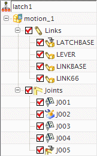
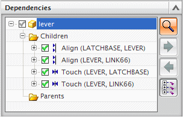

创建运动仿真
 开始→运动仿真
开始→运动仿真
|
注释 |
如果提示您保存主模型部件，点击否。 |
 运动导航器
运动导航器
-
 latch1
latch1 -
 新建仿真
新建仿真 -
分析类型
-

运动学
-

基于组件的仿真
-
仿真名
assembly_constraints_sim
-
确定
将打开机构运动副向导。
-
组件 latchbase 与 lever 之间的约束将变为名为 MAPP001的旋转副
-
组件 latchbase 与 linkbase 之间的约束将变为名为 MAPP002的平面副
-
组件 lever 与 link66 之间的约束将变为名为 MAPP003的旋转副
-
组件 linkbase 与 link66 之间的约束将变为名为 MAPP004的旋转副
软件将根据原始装配约束所允许的自由度来选择正确类型的运动副进行创建。
-
-
确定
-
查看软件自动创建的连杆与运动副。

 装配导航器
装配导航器
-
 latch1 (如果需要，请展开)
latch1 (如果需要，请展开) -
lever
-
相依性
-
详细视图
译者注：此处英文原文为 Detail View，NX 8.5 中文版将其译作局部放大图，显然是不对的。
-
子项(如果需要，请展开)

注意与所选的杠杆组件关联的装配约束。